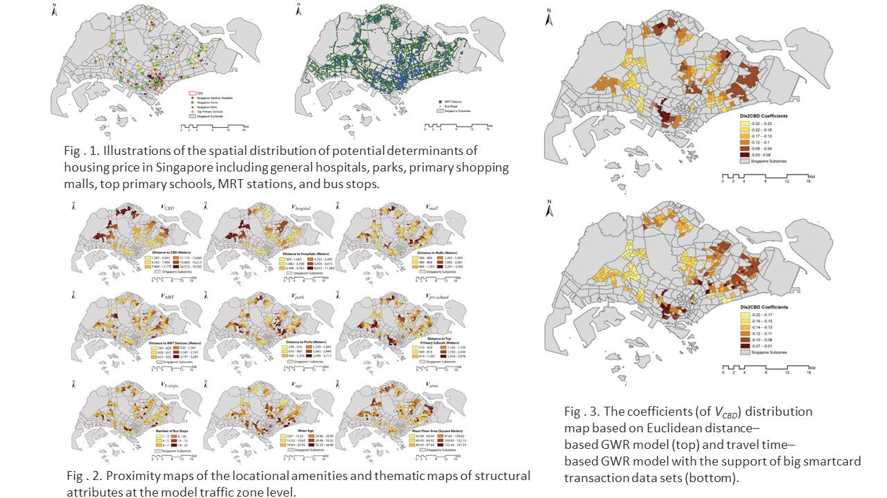

Projects
- The study of multi-objective spatial layout optimization method for public service facilities based on scale effect and deep reinforcement learning, National Natural Science Foundation of China, 2022-2026, PI
- The study of Land Use Optimization towards CSPON and livability: A case study in Shenzhen, Open Fund of Key Laboratory of Urban Land Resources Monitoring and Simulation, Ministry of Natural Resources, 2024-2026, PI
- Overseas High-Level Talent Recruitment Programs, 2021-2025, PI
- Zijiang Outstanding Young Scholar, East China Normal University, 2021-2027, PI
- Multidimensional spatial optimization of green and low-carbon development in mega cities, National Key Technologies R&D Program "Demonstration of Green Development Monitoring, Diagnosis and Optimization Application in Mega Cities", 2022-2026, PI
- BESCAM: Integration of Building Energy Simulation and Urban Canopy Modeling for Assessment of Distributing Energy Demand, National Research Foundation, Singapore (NRF), 2018-2021, Collaborator
- Sustainable Land Use Optimization and Planning Support: A Case Study in Singapore, Singapore Ministry of Education (MOE) Academic Research Fund, 2017-2019, PI
- Measuring Physical Profile and Use of Park Connector Network with Deep Learning and Multi-Source Multi-Modal Data Analytics, Singapore Ministry of Education (MOE) Academic Research Fund, 2017-2019, Co-I
- Anthropogenic Heat Dispersion at Tropical High Density Cities, Singapore Ministry of Education (MOE) Academic Research Fund, 2017-2019, Co-I
- Opportunities for Ecological Adaptation to Flood Hazards in Major Global Cities: London, Singapore & San Francisco, Global Cooperation Fund (Cambridge University, University of California, Berkeley, National University of Singapore), 2017-20218, Co-I (Singapore)
- Geographic Accessibility Analysis of Healthcare Facilities for Elderly Population in Singapore, Singapore Future Aging Research Institute Fund, 2016-2018, PI
Recent Research Highlights
see full publication list in Publications or Google Scholar
Research Scope 1: Spatial Optimization
1. Spatial multi-objective optimization of institutional elderly-care facilities: A case study in Shanghai
A multi-objective iECFs optimization (MiEO) model coupled with an improved Non-dominated Sorting Genetic Algorithm-II (NSGA-II) was innovatively developed, and successfully applied to the case study in Shanghai. The experiments carried out in this research have demonstrated the effectiveness and robustness of the proposed MiEO-INSGA-II model, and presented some representative optimal solutions that could bring significant improvements compared to the current status of iECFs according to these objectives in Shanghai.The effectiveness of this proposed model in supporting iECFs-related decision-making and management, as well as the adaptability of this proposed model for additional case studies in various research areas, and even other kinds of ECFs, were also examined and discussed in this work. [full text].
2. An Intelligent Site Selection Approach for Public Service Facilities Coupled with Improved Graph Attention Network and Deep Reinforcement Learning
This article proposed a novel Graph-Deep-Reinforcement-Learning Facility Location Allocation Model (GDRL-FLAM), coupling a Facility Location Allocation Graph Attention Network (FLA-GAT) with a Deep Reinforcement Learning (DRL) algorithm. This proposed model tackled the location allocation problem for public service facilities based on graph representation and the REINFORCE algorithm. To assess the performance and efficiency of the proposed model, this study conducted experiments based on randomly generated datasets with 20, 50, and 100 points. The experimental results indicated that: (1) For the tests with 20, 50, and 100 points, the GDRL-FLAM model exhibited a significant improvement ranging from 11.79% to 14.49% compared to the Genetic Algorithm (GA) which is one of the commonly used heuristic algorithms for addressing location allocation problems. For the tests with 150 and 200 points, the improvement ranged from 1.52% to 9.35%. Moreover, with the increase in the size of the training set, the model also demonstrated enhanced generalizability on large-scale datasets; (2) The GDRL-FLAM model showed strong transfer learning ability to obtain the location allocation strategies in simple scenarios and adapt them to more complex scenarios; (3) In the case study of Singapore, the GDRL-FLAM model outperformed GA significantly, achieving obvious improvements ranging from 1.01% to 10.75%; (4) In all these abovementioned tests and experiments, the GDRL-FLAM model showed substantial improvement in efficiency compared to GA. [full text].
Research Scope 2: Spatial Big Data Analytics
1. Measuring the age-friendliness of streets' walking environment using multi-source big data: A case study in Shanghai, China
In this research, considering six indicators of greenness, walkability, safety, imageability, enclosure, and complexity, a novel quantitative evaluation model based on multi-source geospatial big datasets is proposed for assessing the age-friendliness of streets' walking environment from both the older adults' and experts' perspectives and has also been successfully applied in the case study of Xuhui District in Shanghai, China. Based on the survey with both groups of older adults and experts, the age-friendliness of the streets' walking environment from both perspectives was obtained, analyzed, and compared. The results show that among all sub-districts in Xuhui District, Tianping Road Sub-district and Hunan Road Sub-district have the best walking environment; and the roads surrounding expressways or arterial roads typically have lower levels of age-friendliness, while sub-arterial roads and access roads generally exhibit higher levels of age-friendliness according to both older adults and experts. It is also noted that streets with high age-friendliness for older adults tend to be outstanding in walkability and greenness, whereas experts prefer streets with high safety and walkability. In addition, the comprehensive analysis of the impact factors on age-friendliness further reveals a series of hidden significant influencing factors associated with the different preferences between older adults and experts.
[full text]
2. A Big Data–Based Geographically Weighted Regression Model for Public Housing Prices: A Case Study in Singapore
In this research, three hedonic pricing models, including an ordinary least squares (OLS) model, a Euclidean distance–based (ED-based) geographically weighted regression (GWR) model, and a travel time-based GWR model supported by a big data set of millions of smartcard transactions, have been developed to investigate the spatial variation of Housing Development Board (HDB) public housing resale prices in Singapore. The results help identify factors that could significantly affect public housing resale prices, including the age and the floor area of the housing units, the distance to the nearest park, the distance to the central business district (CBD), and the distance to the nearest Mass Rapid Transit (MRT) station. The comparison of the three models also explicitly shows that the two GWR models perform much better than the traditional linear hedonic regression model, given the identical variables and data used in the calibration. Furthermore, the travel time–based GWR model has better model fit compared to the ED-based GWR model in the case study. This study demonstrates the potential value of the big data–based GWR model in housing research. It could also be applied to other research fields such as public health and criminal justice.
[full text]

Research Scope 3: Spatially Integrated Social Science
1. How does urbanization affect the cognitive function among older adults: A geospatial analysis in China
This study sourced, formed, and analyzed a set of geospatial big datasets from different sources, such as the Chinese Longitudinal Healthy Longevity Survey (CLHLS) data, and the NPP/VIIRS nighttime light (NTL) data. Results showed a generally negative linear association between the rate of urbanization and cognitive performance among older adults in China. The “U” shaped non-linear relationship between urbanization level and cognitive function, as well as the tipping point, were identified. At the same time, it should be noted that mediators such as education, physical activity, social activity, and community elderly service might be able to mitigate these negative associations. Furthermore, older adults living in eastern regions or urban areas appeared to have better cognitive function than those living in mid-western regions or rural areas in China. The findings also pointed to the importance of focusing on older adults with poor cognitive health status in rapidly urbanizing areas. [full text]